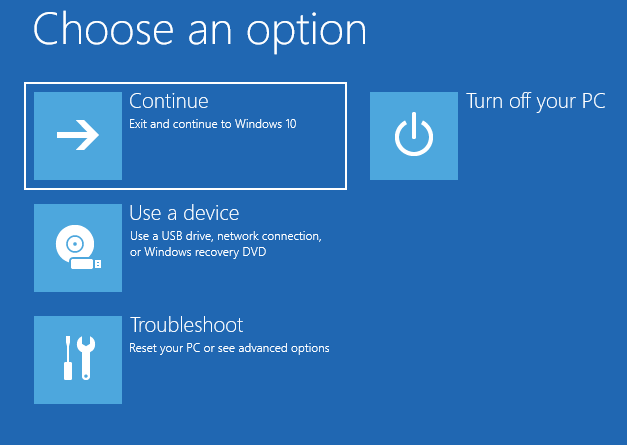

Getting Started
Welcome
Hi! And welcome the computer recovery tools manual!
Your system integrator has installed a collection of tools which, combined with the powerful tools already present in Windows 1X, will assure you peace of mind knowing you will always have options to be back on track rapidly if anything happens to your Windows installation.
If not already done, we recommend you to immediately create a recovery media by following the instructions in the corresponding section.
Features
The computer recovery tools is a single point of access for many built-in utilities like:
- Windows Recovery Environment (WinRE)
- Repair boot problem, reinstall Windows, access off-line files
- Windows System Restore
- Revert changes made by software and new drivers
- Windows File History
- Automatic back-up of file on an attached USB drive
- Creating a recovery media for your computer
- Revert to an image made by your system integrator
- Independent Antivirus based on ClamWim
- Detect and delete virus files when built-in antivirus solution does not work
- File undelete tool
- You can recover recently deleted files from your computer
Recovery Tools
Main menu
Upon starting, you will be greeted by the following menu. You will find description of each function under the image.
Clicking on  will launch the Windows Recovery Environment (WinRE), which is a built-in repair environment in Windows 1X that allows you to do various operation on your Windows installation, like repairing problems that prevent Windows from booting normally and resetting Windows (Windows reinstallation). An offline file browser (to access files from an unbootable system) has also been added.
will launch the Windows Recovery Environment (WinRE), which is a built-in repair environment in Windows 1X that allows you to do various operation on your Windows installation, like repairing problems that prevent Windows from booting normally and resetting Windows (Windows reinstallation). An offline file browser (to access files from an unbootable system) has also been added.
Clicking on  will launch the recovery media creator. A recovery media allows you to fully reinstall Windows on a new hard-drive or when the Windows Recovery Environment is unable to repair Windows. Please note that the recovery media do not allows you to keep your personal files. We recommends you to create a recovery media a soon as possible.
will launch the recovery media creator. A recovery media allows you to fully reinstall Windows on a new hard-drive or when the Windows Recovery Environment is unable to repair Windows. Please note that the recovery media do not allows you to keep your personal files. We recommends you to create a recovery media a soon as possible.
Clicking on  will launch the Windows System Restore panel which allows you to revert back changes made by Windows Updates, newly installed applications or drivers.
will launch the Windows System Restore panel which allows you to revert back changes made by Windows Updates, newly installed applications or drivers.
Clicking on  will launch the File History panel which allows you to configure a periodic backup of your personal files on a USB drive or restore files previously saved on it.
will launch the File History panel which allows you to configure a periodic backup of your personal files on a USB drive or restore files previously saved on it.
Clicking on  , if enabled by your system integrator, will launch an independent antivirus which can help you detect and removes infected files in case your main security software became corrupted or stopped working. This application do not provide live protection and should be only used in case of emergency. Please note that you will have to update the detection catalog on first use, so a working Internet connection is required.
, if enabled by your system integrator, will launch an independent antivirus which can help you detect and removes infected files in case your main security software became corrupted or stopped working. This application do not provide live protection and should be only used in case of emergency. Please note that you will have to update the detection catalog on first use, so a working Internet connection is required.
Clicking on , if enabled by your system integrator, will launch a software to help you recover accidently deleted files from your computer.
Recovery environment
Windows 1X come with the Windows Recovery Environment, a small application outside Windows that can help you diagnose and repair Windows. You can use it to fix booting problems, reinstall Windows and go back to a previous restore point. An offline file browser to quickly copy files to and from this computer to a USB drive is also included with the help of the computer recovery tools installed by your system integrator.
The Windows Recovery Environment can be accessed from the main menu directly or automatically after 3 failed boot attempts.
Boot repair
If Windows cannot boot correctly, you can try the following options.
First, click on "Troubleshoot".
Then, click on "Advanced options".
Finally, click on "Startup Repair" and follow the instructions.
You can also try the "System Restore" option to go back to a previous restore point to fix problems made by newly installed updates, applications or drivers.
Reset the computer
If your computer cannot be repaired (or if you simply start from fresh) you can also reinstall Windows through the recovery environment. To do so, please follow theses steps.
First, click on "Troubleshoot".
Then, click on "Reset this PC".
You can then decide to keep your personal files (music, documents, pictures, etc.) or delete everything for a clean install. In both cases, all applications (except the one pre-installed by your system integrator) will be deleted.
Finally, you can select the "Cloud download" to use the latest Windows 1X version (direct Internet connection required, Wi-Fi not available) or "Local reinstall" to use the same version currently installed on the computer. This will take time and your computer will reboot a few times.
File browser
If your computer cannot boot and you quickly need access to your files (to continue working on another computer by example) you can use the file browser that has been incorporated by your system integrator into the recovery environment. Please connect a USB drive (HDD, Flash drive, etc.) before continuing.
First, click on "Troubleshoot".
Then, click on "Advanced tools".
Finally, click on "File browser". You will then have access to all the files of your computer and you will then be able to copy them to or from an USB drive.
Recovery media
Although your computer is equipped with the Windows Recovery environment that you can use to reset your PC, the computer recovery tools allows you to create a recovery media (USB drive) to reinstall your computer. This can be useful if you replace your internal storage or if the recovery environment is unable to reinstall Windows due to file corruption.
Creating recovery media
From the computer recovery tools menu, click on and follow the on-screen instruction. Since your system integrator may have opted-out of some available option no visual instructions will be provided since this is a generic documentation.
Reinstalling Windows
To reinstall Windows, simply connect the USB drive in the computer and during the boot sequence select it to boot on the recovery media and follows the on-screen instructions from there. Since each computer has different way to select the boot option, please refer to your computer documentation for more details as this documentation is generic.
System Restore
Windows automatically create restore point when some software are installed, when drivers are changed and before some updates. If anything goes wrong, you can use System Restore to roll-back theses change.
Restore system files and settings
From the computer recovery tools menu, click on to launch the System Restore panel. From there, select the restore point to use. If your computer cannot boot, you can also restore it to a previous state from the Recovery Environment.
File history
Although you computer is equipped with a set of tools to maintain it in good working order and to easily reinstall Windows, keeping a backup copies of your files is important. Thanks to Windows File History, this process is easy and only required an USB drive (Flash drive, USB hard drive, etc.) to works. First, connect the USB drive to use, the continue with the configuration section.
From the computer recovery tools menu, click on to launch File History.
Configuration
On first run you will be presented with the following screen.
Please confirm the drive that will be used for backup (#1). If it is not the good one, open the "Select drive" (#2) option to select the good destination. Finally, click on "Turn on" to enable automatic backup of your files.
Restore personal files
To restore your files, first be sure to have plugged-in your USB drive used for the backup.
Then click on "Restore personal file" (#1).
Then open the folder from where you want to restore file by double-clicking on it (#1).
Finally, select the file to restore (#1) and click on the restore button (#2).
Antivirus
Your computer came preinstalled with an antivirus, either Windows Defender or another one installed by your system integrator. Still, it can happen sometime that an antivirus become corrupted or worse, was attacked by a virus and stopped working. The computer recovery tools come with an independent antivirus to help you in theses situation. Please note that the included antivirus does not offer on-access scan and should be used only for emergency case when your regular antivirus solution is not working.
From the computer recovery tools menu, click on to launch the antivirus software.
Updating
On first use, you will have to download the required files.
Simply click on "Yes" and wait for the download to complete.

If you already used the software once, you will have to manually update the required files. To do so, click on the icon (#1) to launch the update process.
Scanning for virus
To scan for file, please do the following steps.

Select the drive to scan (#1) or double-click on it to expand it and select a specific folder. Then click on "Scan" (#2) to launch the virus scanning process.
File undelete
If you have accidently deleted a file there may be chance it is still on your computer. To recover it (undelete) go in the computer recovery tools menu.
Restoring files
Click on to launch the file undelete tool. You will then see the folowwing screen.

Then, select the drive from where the file has been deleted (#1), click on "Scan" (#2) and wait. When the scan is completed select the file to recover from the list (#3).
License and copyrights
Recovery tools support
OEM / Factory recovery partition creator by Dimske has been used to create the recovery option on this computer. Support is offered for system integrator wanting to install the tools for the end-user but no support is provided for the end-user themselves. Please contact your system integrator if you need further assistance.
Recovery tools warranty
No warranty, neither explicit nor implicit, are offered with your computer recovery tools. They offer a "best effort" to help you recover your computer and files but may fails. Neither the creator of the software, the creators of additions software used in this tool or your system integrator can be made responsible for data lost, lost of productivity or any problems you may encounter with the use of this software or your computer. Always do a back-up of your files!
Recovery tools license
- AutoIT is used to run many scripts. AutoIT is made by Jonathan Bennett/The AutoIT group.
- Double Commander is use as the main file browser in the Windows Recovery Environment and is made by Alexander Koblov and others.
- The included antivirus is made by ClamWin and the portable version is made by PortableApps.com.
- The icons used in the different menu are from Google.
- The documentation template come from eGrappler.
- Finally, the whole recovery software (scripts, GUI, manual, etc.) is made by Dimske.